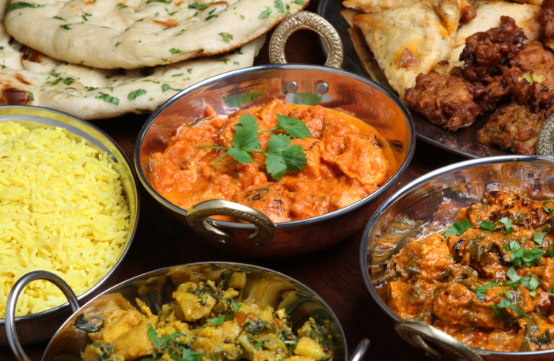

(OBS alla bilder hör inte ihop med recepten)
Huvudrätter
Ingredienser palak paneer med tomat och halloumi/Indien
4 port ris
1 schalottenlök
2 vitlöksklyftor
2 tomater
2 msk riven ingefära
3 msk olivolja
2 msk tomatpuré
1 msk garam masala
390 g krossade tomater
1 dl vitt matlagningsvin
2 dl vispgrädde
1 grönsaksbuljongtärning
200 g spenat
400 g halloumiostar
2 krm salt

Gör så här :
- Koka riset enligt anvisningen på förpackningen.
- Skala all lök, klyfta schalottenlöken och tomaterna. Skiva vitlöken. Skala och riv ingefäran.
- Hetta upp hälften av olivoljan i en stekgryta eller kastrull. Fräs lök, vitlök, ingefära, tomatpuré och garam masala 3-4 minuter.
- Tillsätt tomater, matlagningsvin, grädde och buljongtärning. Låt sjuda 6-7 minuter. Vänd ner spenaten.
- Tärna halloumin och stek den gyllene i resten av olivoljan i en stekpanna.
- Blanda ner osten i grytan och smaka av med salt. Servera med ris.
Rysk gnocchi med lufttorkad skinka/ryssland
Ingredienser
2 askar ricottaost (à 250 g)
1 1/2 dl finriven parmesanost
2 ägg
2 dl vetemjöl
mjöl till utbakningen
2 msk olivolja
3 krm salt
nymalen svartpeppar
Till servering
100 g lufttorkad skinka
1 citron (endast finrivet skal)
4 msk riven parmesanost
1 dl plockade örter (t ex körvel, salvia eller
basilika)
Gör så här :
- Häll av ev vätska från ricottan. Blanda ricotta, parmesan, ägg och salt i en bunke. Blanda i mjölet i omgångar och knåda till en mjuk deg, den ska vara lite kladdig.
- Ta upp degen på väl mjölat bakbord. Dela den i 6 delar (för 4 port) och forma till fingertjocka rullar. Tryck till med en gaffel längs med hela rullen. Skär i ca 2 cm breda bitar.
- Koka upp lättsaltat vatten i en stor kastrull. Lägg i gnocchin och koka upp. Låt gnocchin flyta upp till ytan, det tar 1–2 minuter. Ta upp dem med hålslev och lägg i en skål, gärna varm. Blanda i olja, så att gnocchin inte klibbar ihop. Strö över rivet citronskal, parmesan och plockade örter. Servera med skinkan. Mal över lite svartpeppar.